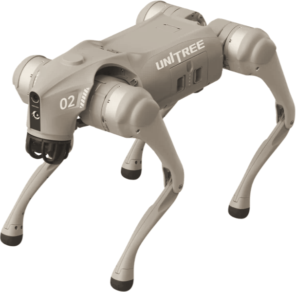

Bozza: pubblicare solo con il consenso scritto di SACMI
Segnaposto: Unitree Go2 da foto ufficiale. Nel post va la foto della consegna.
Consegnato a SACMI, Imola, il 29 ottobre 2026
Fai partire la tesi in azienda con il robot
già pronto da programmare.
Il robot
Go2 EDU con LiDAR, configurato nel nostro laboratorio
La mappa
SLAM e navigazione autonoma nello stabilimento
Il simulatore
Digital twin in MuJoCo per provare prima sul modello
Il manuale
Rev 1.1, con il repository di codice condiviso